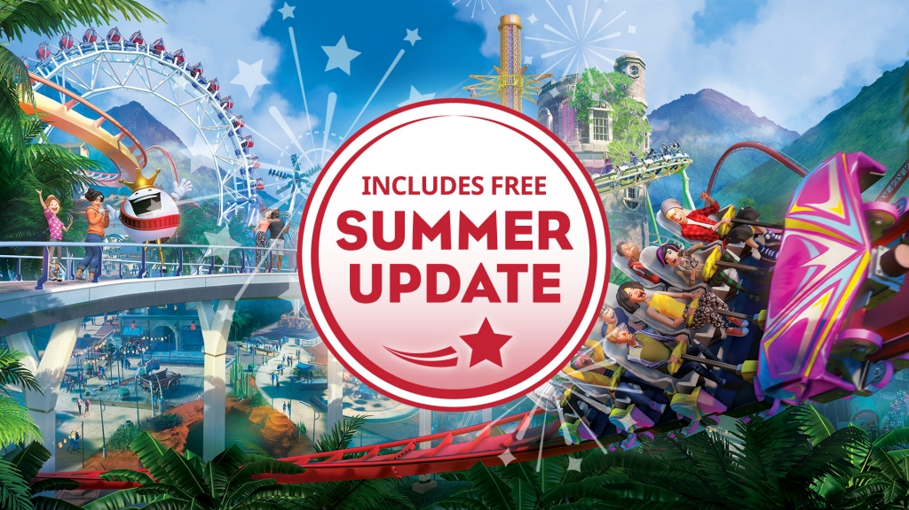

Updates/DLC:
Free summer update!
Hi coaster friends, Our wonderful Summer Update is now LIVE! After showing you the live build last week and teasing you with beautiful images of fireworks and billboards, the 1.3 update is now available for download – if you already own the game, it will automatically roll out to you via Steam. Aside from fireworks and billboards, we have eight new coasters and rides, three new Scenarios, a new Stars and Stripes scenery set, the option to trigger rides, custom biomes, and more! We can’t wait to see what you come up with, from fireworks shows to relaxed summer scenes! Keep your eyes peeled for more info on our upcoming fireworks competition, join us on YouTube (Wednesday 7PM BST), Twitch (Tuesday 1PM BST) and Facebook Live (Friday 2:30PM BST), and send us your creations at community@frontier.co.uk!
